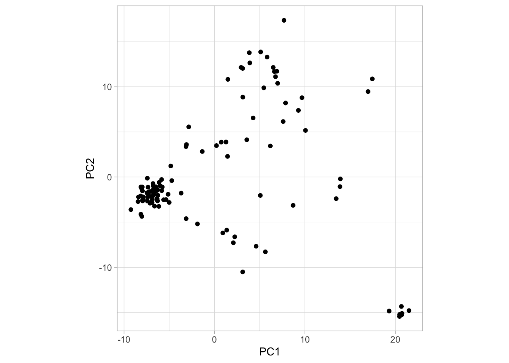

9.2 Population structure
Examining population structure can give us a great deal of insight into the history and origin of populations. Model-free methods for examining population structure and ancestry, such as principal components analysis (PCA), are extremely popular in population genomic research. This is because it is typically simple to apply and relatively easy to interpret when you have learned how. Essentially, PCA aims to identify the main axes of variation in a dataset with each axis being independent of the next (i.e. there should be no correlation between them). Here, we will do a PCA analysis, and then walk you through the interpretation of the PCA, as it can be a bit tricky to wrap your head around the first time you see it.
9.2.1 Village dogs as an insight to dog domestication
To demonstrate how a PCA can help visualise and interpret population structure, we will use a dataset adapted from that originally used by Shannon et al. (2015) to examine the genetic diversity in a worldwide sample of domestic dogs. All of us are familiar with domestic dogs as breeds and pets, but it is easy to overlook the fact that the majority of dogs on earth are in fact free-roaming, human commensals. Rather than being pets or working animals, they just live alongside humans and are equally charming.
In their study, Shannon et al. (2015) surveyed hundreds of dogs from across the world, focusing mainly on village dogs in developing countries. Since domestic dog breeds are often characterised by severe bottlenecks and inbreeding, they lack a lot of the diversity that would have been present when they first became a domestic species. In contrast, village dogs are unlikely to have undergone such bottlenecks and so might represent a more broad sample of the true genetic diversity present in dogs.
The researchers used a SNP chip and previously published data to collate variant calls from over 5,406 dogs at 185,805 SNP markers. Of the 5,406 dogs, 549 were village dogs. It is these free-roaming dogs we will focus on today.
9.2.2 Reading the data into R
In order to run our PCA analysis, we will need to use adegenet. However, the full dataset is much too large to read, so instead we will use a smaller subsetted dataset. We will read in a special format of SNP data produced by a program called PLINK. Don’t worry too much about the data format for now - our main aim is to get it into R. However, feel free to explore the PLINK website if you are interested.
We will need a plink raw file and also a plink map file for our dog data. Follow the links to download the data and then use the read.PLINK function below to read them in. (if you’re on a mac, and think this goes too slowly, try changing the parallel argument to TRUE)
# read in the dog data
dogs <- read.PLINK(file = "./village_subsample.raw",
map.file = "./village_subsample.map", parallel = FALSE,
chunkSize = 2000)Running the function will create a genlight object - a special data structure for adegenet. If you call the dogs object, you will see some summary information and also the number of individuals and markers. As you will see, we have subsampled this data to make it more feasible to run an analysis in R.
9.2.3 Performing a PCA
With adegenet, we can perform PCA on our genomic data with the glPCA function.
# perform pca on dogs
dogs_pca <- glPca(dogs, parallel = TRUE, nf = 20)Here again Mac and Linux users can benefit from parallel processing with parallel = TRUE. We also use nf = 20 in order to tell the function we want to retain 20 principal components.
Let’s take a moment to look at the output of our PCA analysis.
# look at pca object
objects(dogs_pca)Our dogs_pca object is a list with four elements. We can ignore call - that is just the call to the function we performed above. eig returns the eigenvalues for all the principal components calculated (more on this later). loadings is a matrix of how the SNPs load onto the PC scores - i.e. how their changes in allele frequency effect the position of the data points along the axis. Finally the scores matrix is the actual principal component scores for each individual, allowing us to actually see how the invidivudals are distributed in our analysis.
9.2.4 Visualising the PCA
Plotting a PCA is the best way to properly interpret it, so we will do this now. The first thing we should do is extract the principal component scores from the data. Remember that ggplot needs data to be in a data frame, so we will begin by converting dogs_pca$scores to a data frame. The ID of each dog is stored as row names, but we want it in a regular column, so we have to add an id column as well.
pca_df <- data.frame(dogs_pca$scores)
pca_df$id <- rownames(dogs_pca$scores)We can then plot the first 2 axes using ggplot()37.
# plot with ggplot2
ggplot(pca_df, aes(PC1, PC2)) +
geom_point() +
theme_light() +
coord_fixed()
So what does this plot tell us? Let’s explain a bit about how to interpret PCA plots.
Interpreting PCA plots
A PCA plot is a bit different from other plots you may have encountered before. One key difference is that the value on the axes cannot be translated into anything concrete. The principal components (PC1, PC2, etc.) simply arranges the points (individual dogs in our case) along the axis depending on how similar they are to one another. This means that the further away two points are, the more different they are in some undefined aspect38. The simplest way to read a PCA plot is:
- points that are close together are similar to one another
- points that are far apart are different to one another
- consequently, if points form a cluster (e.g., the group of points in the bottom right of the plot above), they are similar to one another and different from everything else
Another thing to note is that the principal components are ordered after how much variation they explain. For example, PC1 is the component explaining most variation in the data, PC2 the second most, PC3 the third most and so on. So two points being far apart on PC1 means that they are “more different” than two points far apart on PC2.
OK, so the above plot looks interesting. We can see that one group of points in particular forms a cluster in the bottom right corner. But which dogs form this cluster? Are they from the same population? To investigate this we need to add some more information to our plot, namely the population each dog belongs to. We have prepared that information for you and you can download it here. Then read it in like so:
# read in village dog data
village_data <- read.table("./village_dogs.tsv", sep = "\t", header = TRUE)Take a moment to look at this. It has three columns, id, breed and location. Our my_pca object also has an id column, so we need to join the two datasets. We can do this with a dplyr function called left_join() (which we explain more about next week):
# join pca and village dog data
village_pca <- left_join(pca_df, village_data, by = "id")Now we have added location to our data set. This means we can plot the PCA using ggplot() and at the same time colour the points by the location they were sampled in (try doing this without looking at my code first!).
# plot with ggplot2
ggplot(village_pca, aes(PC1, PC2, col = location)) +
geom_point() +
theme_light() +
coord_fixed()
So from this PCA, what can we deduce? First if all, the cluster we identified earlier are dogs from East Asia. Similarly, Central Asian, African and European dogs seem to form their own clusters. In the original paper, Shannon et al. (2015) suggest that the origin of dog domestication might actually be in Central Asia. This is hard to deduce from the PCA but it is clear that there is geographical structure among village dogs.
9.2.5 Eigenvalues
How much of the variance in the data set is captured by the PCA? For this, we can use the eigenvalues of the principal components, stored in dogs_pca$eig. Have a look at this vector, where PC1 is the first element, PC2 the second and so on, and notice that the numbers are decreasing. This means that PC1 explains more variation than the other axes, as we mentioned previously.
These numbers are not easy to interpret by themselves, but are useful if we view them as a fraction of the total. For example, we can see how much of the total variation is explained by PC1 like this:
dogs_pca$eig[1] / sum(dogs_pca$eig)
#> [1] 0.04596527And see that PC1 explains around 4.6 % of the variation of the data. Due to R treating vectors as it would single numbers in many cases, we can calculate variance explained for all principal components in a single operation like this:
eig <- (dogs_pca$eig / sum(dogs_pca$eig))
eigFrom eig, we can see that if we sum the first two elements (i.e., PC1 and PC2), we find that around 7.63% of variance explained by the first two principal components (and by extension, the patterns we wee in our plot). A total of 7.63% for the first two vectors sounds small, but it is actually quite an appreciable amount of variance. Typically, we would concentrate on the principal components that together account for at least 10% of the variance.
9.2.6 The full data set
It is important to remember that the analyses we have done have been on a small subsample. Working with the full data, however, could make patterns clearer. Therefore, you will be working with the complete data in the assignment.
Since the full data set is very large, we cannot perform PCA on this in R. However, we have conducted this for you and you can find the full PCA data set here. You can also find the eigenvectors here. More on this in the assignment!